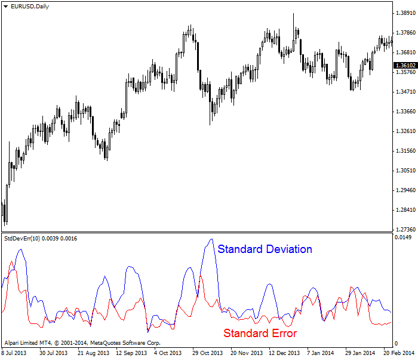
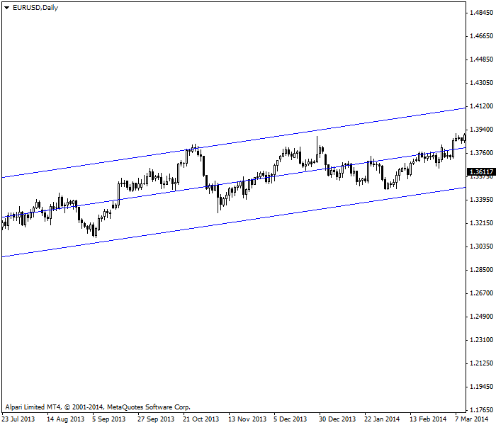
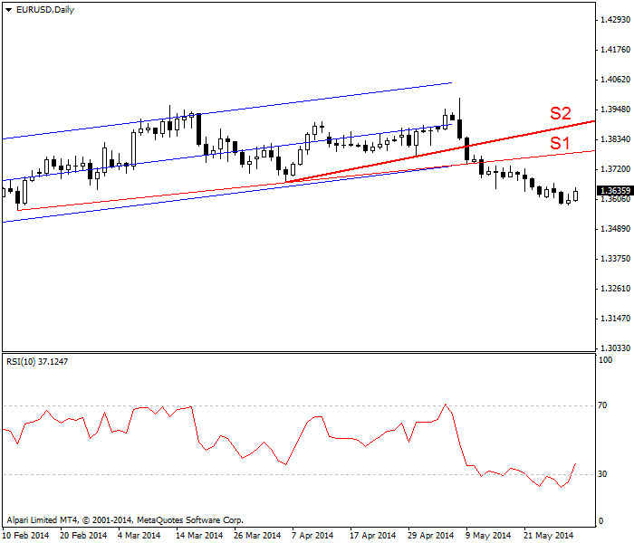
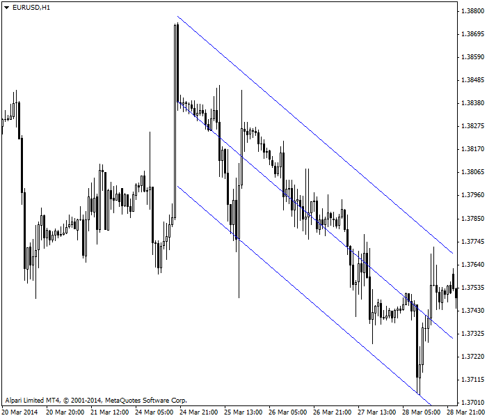

<!DOCTYPE html>
<html>
</html>
<head>
  <meta charset="utf-8">
  <meta http-equiv="X-UA-Compatible" content="IE=edge">
  <title>外汇站（fx-z.com） - 通道</title>
  <meta name="description" content="">
  <meta name="viewport" content="width=device-width, initial-scale=1">
  <meta name="robots" content="all,follow">
  <!-- Bootstrap CSS-->
  <link rel="stylesheet" href="vendor/bootstrap/css/bootstrap.min.css">
  <!-- Font Awesome CSS-->
  <link rel="stylesheet" href="vendor/font-awesome/css/font-awesome.min.css">
  <!-- Google fonts - Roboto-->
  <link rel="stylesheet" href="https://fonts.googleapis.com/css?family=Roboto:400,300,700,400italic">
  <!-- owl carousel-->
  <link rel="stylesheet" href="vendor/owl.carousel/assets/owl.carousel.css">
  <link rel="stylesheet" href="vendor/owl.carousel/assets/owl.theme.default.css">
  <!-- theme stylesheet-->
  <link rel="stylesheet" href="css/style.default.css" id="theme-stylesheet">
  <!-- Custom stylesheet - for your changes-->
  <link rel="stylesheet" href="css/custom.css">
  <!-- Favicon-->
  <link rel="shortcut icon" href="img/favicon.png">
  <!-- Tweaks for older IEs--><!--[if lt IE 9]>
    <script src="https://oss.maxcdn.com/html5shiv/3.7.3/html5shiv.min.js"></script>
    <script src="https://oss.maxcdn.com/respond/1.4.2/respond.min.js"></script><![endif]-->
</head>
<body>
  <div id="all">
    <div class="container-fluid">
      <div class="row row-offcanvas row-offcanvas-left"> 
        <!--   *** SIDEBAR ***-->
        <div id="sidebar" class="col-md-4 col-lg-3 sidebar-offcanvas">
          <div class="sidebar-content">
            <h1 class="sidebar-heading"> <a href="https://fx-z.com">fx-z.com</a></h1>
            <p class="sidebar-p">介绍外汇相关的基本知识，告诉您如何进行自己的技术面和基本面分析，讲解先进的交易理念，并且为您阐述失败交易者与专业交易者之间的真正区别。 </p>
            <p class="sidebar-p">通过这些课程的学习，您将学会如何根据自己的优势来应用情绪分析，还将了解真实世界的事件会对货币汇率产生什么影响，央行在外汇市场中所发挥的作用，以及交易者在颇受欢迎的即期外汇交易中有哪些选择方案。 </p>
            <ul class="sidebar-menu">
                <!-- Link-->
                <li class="sidebar-item"><a href="https://fx-z.com" class="sidebar-link">首页</a></li>
                <!-- Link-->
                <li class="sidebar-item"><a href="cihui.html" class="sidebar-link">外汇词汇</a></li>
                <!-- Link-->
                <li class="sidebar-item"><a href="ebook.html" class="sidebar-link">获取外汇电子书</a></li>
            </ul>
            <p class="social"><a href="https://www.forextimechina.com.cn/zh?form=IZIN" target="_blank"data-animate-hover="pulse" class="external facebook"><i class="fa fa-eur"></i></a><a href="https://www.forextimechina.com.cn/zh?form=IZIN" target="_blank" data-animate-hover="pulse" class="external gplus"><i class="fa fa-gbp"></i></a><a href="https://www.forextimechina.com.cn/zh?form=IZIN" target="_blank" data-animate-hover="pulse" class="external twitter"><i class="fa fa-rmb"></i></a><a href="https://www.forextimechina.com.cn/zh?form=IZIN" target="_blank" title="" class="external instagram"><i class="fa fa-dollar"></i></a><a href="https://www.forextimechina.com.cn/zh?form=IZIN" target="_blank" data-animate-hover="pulse" class="email"><i class="fa fa-money"></i></a></p>
            <div class="copyright text-center text-md-left">
             
              
            </div>
          </div>
        </div>
        <!--   *** SIDEBAR END ***  -->
        <!--   *** DETAIL ***-->
        <div class="col-md-8 col-lg-9 content-column white-background">
          <div class="small-navbar d-flex d-md-none">
            <button type="button" data-toggle="offcanvas" class="btn btn-outline-primary"> <i class="fa fa-align-left mr-2"></i>菜单</button>
            <h1 class="small-navbar-heading"> <a href="https://fx-z.com/6-1.html">下一篇 </a></h1>
          </div>
          <div class="row">
            <div class="col-xl-10">
              <div class="content-column-content">
                <h1>通道</h1>
       <p>
    支撑和阻力趋势线可用于判定当前价格在一系列可能价格范围内所处的位置，以及设置止损位和目标位。您可以画一条支撑线，然后查看相应阻力线是否与之平行，或者强迫阻力线与之平行，即使它突破了一些极端的异常值。因此，经典趋势通道由代表支撑位和阻力位的平行线形成。
</p>
<p>
    问题在于，由平行支撑线与阻力线组成的通道往往不会持续太久。价格走势根本不会长期以这样有序的方式进行。更糟糕的是，如果通道非常狭窄，它很容易破碎。通道突破的目的在于示意走势结束，但若是通道狭窄，该突破很可能只是一次随机异常行为。若通道较宽，您可以确信突破真实存在，同样，通过这些线设置的止损位和目标位可能不适合您的个人风险偏好。
</p>
<p>
    <strong>线性回归通道</strong>
</p>
<p>
    绘制通道的更好方法是将它置于线性回归直线的中央。这样做的技巧是将两个标准误差的数值添加到线性回归以形成通道顶部，并将它们从线性回归减掉以形成通道底部。这一过程与布林线的计算过程相同：对 20 周期移动平均线加减标准差。标准误差与标准差的区别是什么呢？
</p>
<p>
    您无需了解确切的统计概念也能使用这两种方法，但我们还是做一些相关介绍。标准差是指离开平均值的分散程度，例如布林线计算过程中的平均值。标准差衡量变异性或波动性。您首先要得出价格与时段平均价之间的差值，计算差值的平方，除以周期数，然后取平方根。提到这个问题不也很好吗？
</p>
<p>
    相反，标准误差衡量价格与线性回归直线的接近程度。价格越接近线性回归直线，离开回归直线的变异性越小，同时趋势越强。若价格是与回归直线相距很远的异常值，则标准误差的数值较高。这些高数值被称为噪音。若价格正好位于回归直线上，标准误差为零，则价格正“位于趋势中”。下图为示例图表。实际上，您绝不会以这种方式显示标准差（蓝色）或标准误差（红色），但该图表显示，标准差的峰值和谷值更大，因为它衡量离开平均值的变异性（本例中为 10 天）。红色标准误差的峰值更小，意味着变化并不是很反常，虽然有时会出现表示噪音的极端值。
</p>
<p>
     标准差与标准误差列于同一张图表中
</p>
<p>
    线性回归通道受到与线性回归相同的限制——您必须自己设置起点和终点，这始终是主观操作。一条好法则是，在明显的高位或低位设置起点和终点，若趋势继续保持相同的坡度和走势，则手动延长线条，以突出显示支撑位和阻力位所在的位置。
</p>
<p>
    以下图表的线性回归通道将起点设为最低的低点，将终点设为最高的高点，投影用红色虚线标出。您马上可以看到，在这个时段内，价格偶尔突破通道线——有一次——但通道准确显示了价格起伏。请注意，在这八个月内，价格似乎是在通道顶部与底部之间循环变动。在价格图结束时，您应该想到，虽然最后几个价格向通道底部下探，但整体走势是上行的。若价格继续探底，说明您刚好发现了多头头寸的理想入场点。您还应该知道止损位——低于通道底部的数个点位以及目标位——通道顶部。至少，您期望价格回到中央线性回归。
</p>
<p>
     线性回归通道包含价格
</p>
<p>
    不过，须注意：价格不会总是有序地到达顶部并顺从地掉头向下触底。本图中，最后的高位在掉头向下之前并未到达顶部。线性回归通道颇具美感，可在您不了行情时提供一定的见解，而且它还可以提供关于入场和出场的交易规则，但这只适用于您交易较长的时间周期时。为了快速上手，当货币回撤一部分收益时，您希望退出多头头寸。您可以通过添加棒形图读数（无法匹配三天的最高价）或其它指标来做准备。
</p>
<p>
    在下图中，两条红色支撑线叠加于通道图表上。第一条支撑线（S1）始于近期最低价，而且经过两日调整后将让您退出。第二，短一些的支撑线（S2）会让您在突破日退出。适合这种情况的另一个有用指标是相对强弱指数（RSI）。竖线标记处表示底部窗口中的 RSI 指标正在释放信号：上行趋势正在消退，您应当考虑出场———比下跌突破日提前两天。
</p>
<p>
     回归通道、支撑线和 RSI 之间的关系
</p>
<p>
    <strong>分形特质</strong>
</p>
<p>
    您现在应该知道，外汇价格展示了一种分形特质——除非已经标记，否则您无法知晓图表所绘制的时间周期。每小时图表看起来与每日图表相差不大，因为每个交易时段的交易者行为往往相同。请查看下图，上面显示了每小时图表的线性回归通道。该通道也从最高位向最低位绘制，并且有价格突出通道范围。请注意，下跌趋势中出现四个下跌突破，但没有高点超过通道顶部。若我们认为趋势具有充分依据，而且相信中央趋势（价格将围绕线性回归聚集），我们希望在价格序列结束时的点数成为卖方（周五收盘）。通过每日图表上的线性回归通道，您能够使用通道线来设置止损位和目标位，虽然采用一些其它指标也是好方法。
</p>
<p>
     每小时时间周期的线性回归
</p>
<p>
    <strong>您知道吗？</strong>
</p>
<p>
    多年以来，为了让线性回归通道更易于交易者使用，分析师设计了许多线性回归通道的变化形式。例如，Gilbert Raff 建议增加两个标准差，使任何价格几乎都不能突破通道。额外的 Raff 确保您不会过早获利了结或在异常峰值止损离场。
</p>
<p>
    <br/>
</p>
<p>
    <br/>
</p>
              </div>
            </div>
          </div>
        </div>
      </div>
    </div>
  </div>
  <!-- JavaScript files-->
  <script src="vendor/jquery/jquery.min.js"></script>
  <script src="vendor/popper.js/umd/popper.min.js"> </script>
  <script src="vendor/bootstrap/js/bootstrap.min.js"></script>
  <script src="vendor/jquery.cookie/jquery.cookie.js"> </script>
  <script src="vendor/owl.carousel/owl.carousel.min.js"></script>
  <script src="vendor/masonry-layout/masonry.pkgd.min.js"></script>
  <script src="js/front.js"></script>
</body>